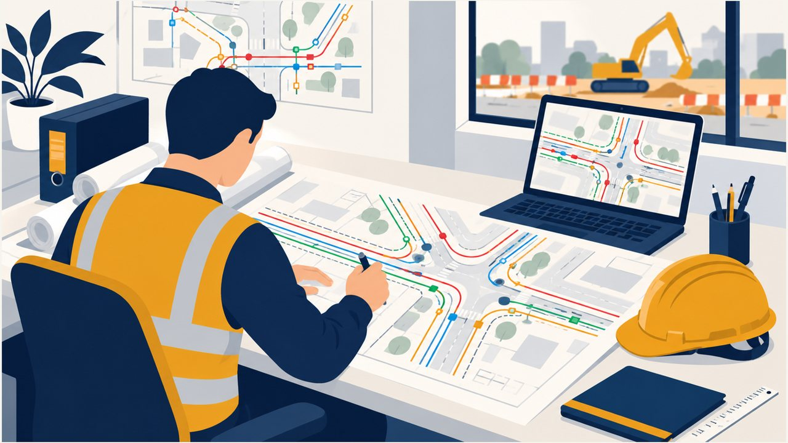
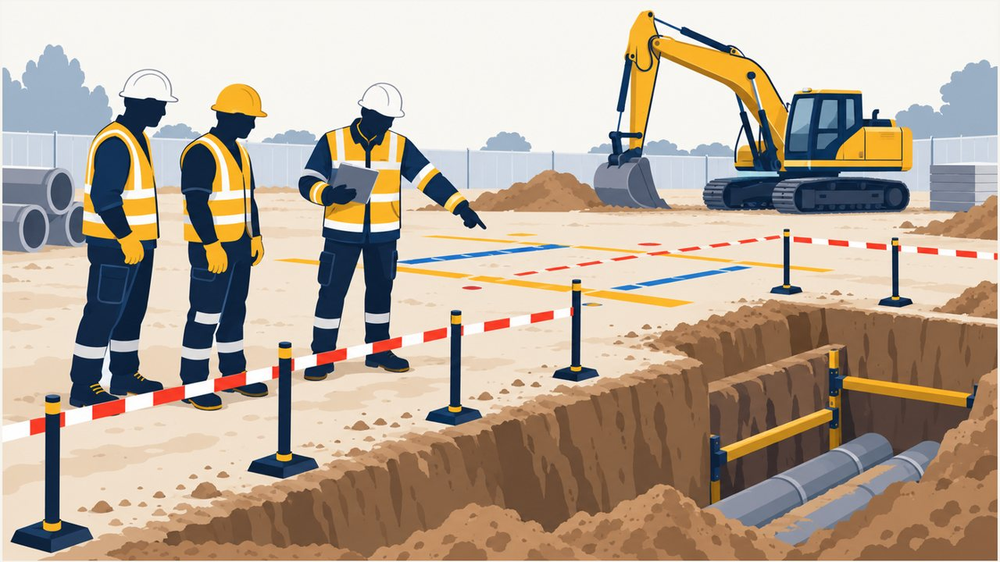
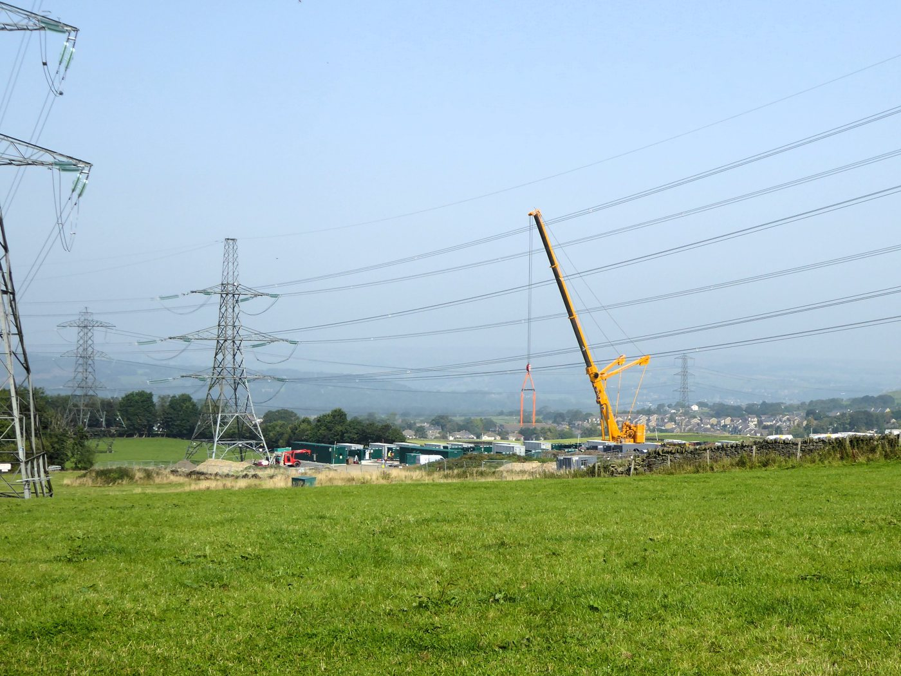
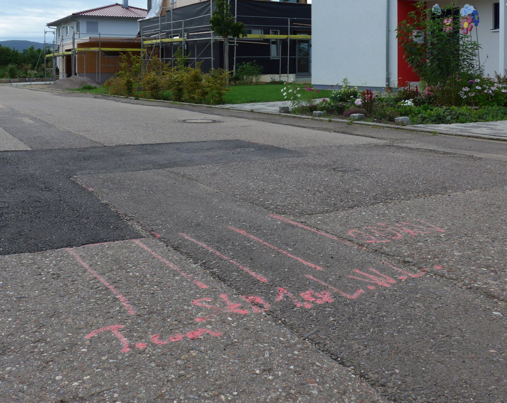
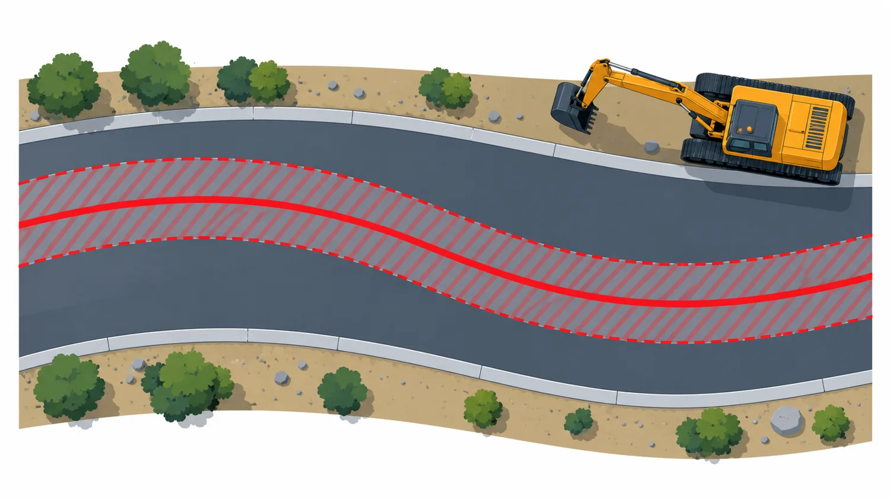
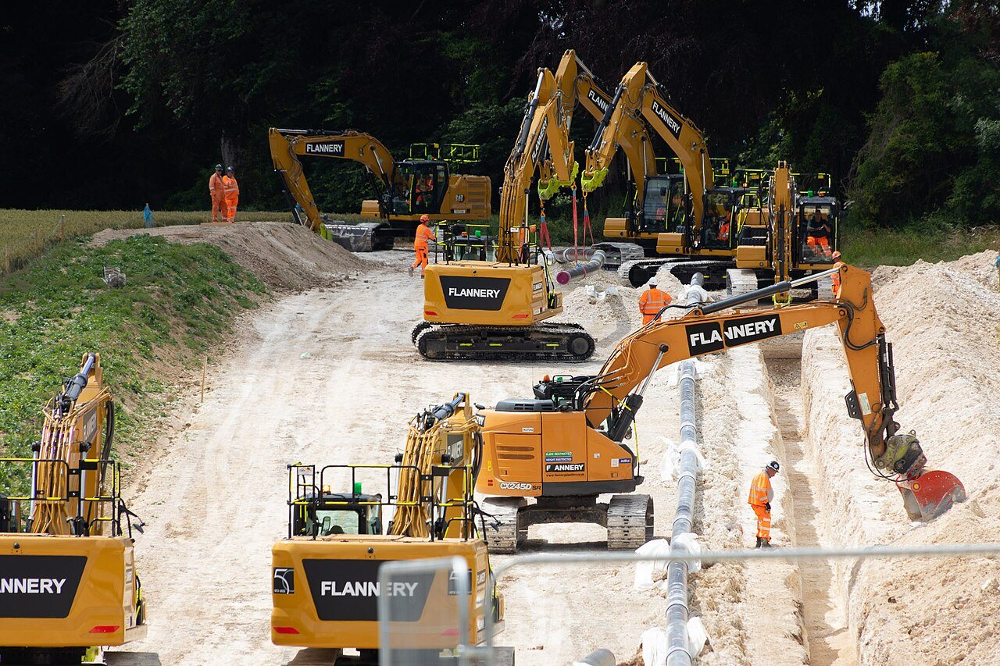
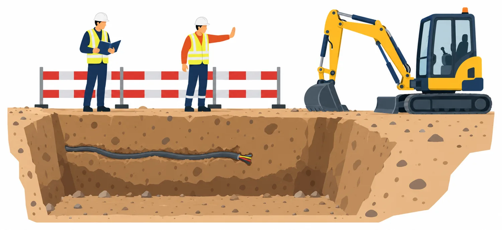

Jeudi 29 octobre 2026 · La Seyne-sur-Mer · Animation : Benoît Deflandre, RMBD Risk Management
SUIVEZ SUR VOTRE TÉLÉPHONE
Scannez ce code
Chaque diapo porte un repère vers la page du site à lire en parallèle.
Consul Team · Session INTER 260018A
Intervenir à proximité des réseaux
Préparation à l’AIPR, profil opérateur, encadrant et concepteur
L’AIPR en un coup d’œil
Autorisation d’intervention à proximité des réseaux
Quoi
Une autorisation délivrée par l’employeur, pas par l’État.
Pour qui
Concepteur, encadrant, opérateur. L’opérateur conduit les engins.
Comment
Attestation après un QCM, CACES en cours de validité ou diplôme professionnel de moins de 5 ans, sur liste officielle.
Combien de temps
Jamais plus que le justificatif, et 5 ans au plus pour une attestation de QCM.
L’examen
30 questions, 1 heure, 36 points sur 60 pour le profil opérateur.
Obligation
L’exécutant vérifie la formation et l’AIPR de son personnel.
Sources : guide pratique FFB, FNTP, OPPBTP, SGAMbtp p. 14-16 ; arrêté du 22/12/2015, art. 2 ; code de l’environnement R554-31 ; arrêtés du 15/01/2019 et du 29/10/2018 (listes de diplômes)
SUR LE SITE
Socle pour débutants
Programme · 7 h
Huit modules, un module pratique, l’examen
Horaire
Séquence
9 h 00
Accueil, objectifs, profils
9 h 15
1 Mon rôle · 2 Reconnaître les réseaux
10 h 25
3 Risques, EPI et EPC · 4 Marquage · 5 DT et DICT
13 h 15
6 Précision et techniques · 7 Anomalie
14 h 00
Module pratique (1 h) : plans et marquage-piquetage, analyses de risques sur site, matériels
15 h 15
8 Incident, accident, travaux urgents
15 h 50
Examen QCM (1 h), puis corrigé collectif
Pauses 10 h 10 et 15 h 00 · déjeuner 12 h 15 à 13 h 15 · fin 17 h 00
SUR LE SITE
Suivre l'animation
L’examen
Le cadre fixé par l’arrêté du 22/12/2015
30
questions pour le profil opérateur
1 h
de durée d’épreuve
36/60
points pour réussir
3 questions sont prioritaires. Barème : +2 bonne réponse, 0 sans réponse, −1 mauvaise réponse, −5 mauvaise réponse à une question prioritaire.
Source : arrêté du 22 décembre 2015, art. 2 · la journée prépare, elle ne garantit pas la réussite
SUR LE SITE
Examen blanc
Si le profil change
Encadrant et concepteur : ce qui s’ajoute
Encadrant
Exécutant des travaux : DICT, récépissés avant démarrage, information de l’équipe, signalement des dommages, règle des 4 A.
Concepteur
Responsable de projet : DT, investigations complémentaires, DCE, marquage-piquetage, arrêt des travaux par ordre écrit.
40 questions
Seuil de 48 points sur 80, contre 30 questions et 36 sur 60 pour l’opérateur.
Le concepteur vaut encadrant et opérateur ; l’encadrant vaut opérateur. Deux cours complets avec quiz sur le site, rubriques « Cours encadrant » et « Cours concepteur ».
Sources : fascicule 1 du guide d’application §3.2, §3.4, §15.1 ; arrêté du 22/12/2015, art. 2
SUR LE SITE
Profils encadrant et concepteur

Profil concepteur
Le responsable de projet prépare
Il déclare le projet, analyse les réponses, fait localiser les réseaux, prévoit le marquage et fixe les clauses dans le marché.
Texte de référence : le responsable de projet établit la DT, analyse les réponses et fournit le DCE aux entreprises. (Fascicule 1 §3.2, §5.3)
Illustration générée par IA, schéma de principe, sans valeur réglementaire
SUR LE SITE
Cours concepteur

Profil encadrant
L’encadrant prépare et fait appliquer
Il informe l’équipe de la position des réseaux, fait entretenir le marquage et fait surseoir en cas d’anomalie.
Texte de référence : informer les employés de la localisation des réseaux et des mesures de prévention à mettre en œuvre. (Fascicule 1 §3.4 j)
Illustration générée par IA, schéma de principe, sans valeur réglementaire
SUR LE SITE
Cours encadrant
Si le profil change · PPSPS
Le PPSPS : le plan de sécurité de l’entreprise
Qui
Chaque entreprise, sous-traitante comprise, sur un chantier avec plan général de coordination.
Quand
Avant le début des travaux, sous 30 jours à compter de la réception du contrat signé.
À qui
Au coordonnateur SPS. Une entreprise seule au-delà des seuils du décret le remet au maître d’ouvrage.
Contenu
Procédés d’exécution, risques prévisibles, protections collectives, secours et hygiène.
Il ne remplace ni la DT, ni la DICT, ni l’AIPR : c’est là que l’entreprise écrit comment elle traite le risque réseaux.
Sources : code du travail L4532-9, R4532-56, R4532-66, R4532-67 (code.travail.gouv.fr, lu le 27/10/2026)
SUR LE SITE
Cours encadrant
Si le profil change · guide technique
Les fiches par engin et par tâche
Dégager un ouvrage invisible
Passes successives de faible épaisseur, pas de bras de levier, anomalie : on suspend.
Forage vertical
Interdit dans le fuseau d’un ouvrage enterré, sauf localisation préalable.
Fusée localisable
Profondeur d’au moins 10 fois le diamètre, suivi permanent par récepteur.
Arbre près d’une ligne
Chute guidée à 3 m jusqu’à 50 kV, à 5 m au-delà ; DT et DICT toujours.
Les passages en rouge du guide sont des prescriptions ; le reste, des recommandations que l’entreprise adapte.
Chercher avec prudence les réseaux attendus ou soupçonnés
Stopper les travaux en cas d’anomalie
Connaître et appliquer les 4 A
Source : ouvrage ENPC / Ediser p. 45 · Illustration générée par IA, schéma de principe
SUR LE SITE
Séquence 1 · Mon rôle
Module 2 · Reconnaître les réseaux
Sensible ou non sensible
Réseaux sensibles
Gaz combustibles, hydrocarbures, produits chimiques, vapeur et fluides caloporteurs, lignes électriques et éclairage public, transports guidés, digues.
Réseaux non sensibles
Télécommunications, eau potable et incendie, assainissement. L’exploitant peut en classer certains comme sensibles.
Repères : grillage rouge pour l’électricité, jaune pour le gaz, violet pour la chaleur et le froid, à 20 cm pour l’électricité et le gaz. Non systématique.
Une conduite de gaz jaune à bandes noires et, en bas à gauche, un fragment de grillage jaune. Que peut-on en conclure, et que ne peut-on pas conclure ?
Texte de référence : le grillage avertisseur du gaz est jaune, à 20 cm au-dessus de la canalisation, et il n’est pas systématique. La photo ne démontre pas une pose conforme. (Fascicule 2 §3)
Photo : Cjp24, CC BY-SA 4.0, via Wikimedia Commons
SUR LE SITE
Séquence 2 · Reconnaître les réseaux
Module 3 · Mesurer les risques
Lignes aériennes : deux « 3 m / 5 m » différents
Distance de sécurité
3 m jusqu’à 50 kV, 5 m au-delà. Valable pour l’engin, l’outil et la charge. Tension à demander à l’exploitant.
Seuil de DT/DICT et travaux urgents
3 m d’une ligne basse tension, 5 m d’une autre ligne. Sert à la dispense de déclaration et à l’AIPR obligatoire en urgence.
Un détecteur d’approche n’est pas une distance de sécurité.
Sources : INRS Travail & Sécurité n° 871 (2025), ED 6292 ; fascicule 1 §1.1.3 et §15.1
SUR LE SITE
Séquence 3 · Mesurer les risques

Photo · Module 3
Une grue, des lignes sur pylônes
Une grue mobile travaille à l’arrière-plan d’un champ traversé de lignes. Sur la photo, la distance réelle entre la grue et les câbles ne se mesure pas.
Texte de référence : 3 m jusqu’à 50 kV, 5 m au-delà, outils, engins et charges compris. La tension se demande à l’exploitant. (INRS Travail & Sécurité n° 871, p. 14 ; ED 6292)
Photo : Kevin Waterhouse, CC BY-SA 2.0, via Wikimedia Commons (Royaume-Uni)
SUR LE SITE
Séquence 3 · Mesurer les risques
Module 3 · Protection
Protection collective d’abord, individuelle en complément
1 Collective
Elle protège tout le monde en même temps : balisage, protections, consignes de chantier.
2 Individuelle
Les EPI complètent la collective, après évaluation du risque, et sont contrôlés.
3 Formation
Les EPI sont choisis, vérifiés et expliqués aux salariés par l’employeur.
Un EPI ne remplace pas la distance de sécurité ni l’arrêt en cas de doute.
Sources : INRS, principes généraux de prévention et protection individuelle (S36, S37, lus le 27/10/2026)
SUR LE SITE
Séquence 3 · Mesurer les risques
Module 4 · Marquage-piquetage
Le code couleur au sol
Rouge : électricité
Jaune : gaz, hydrocarbures
Orange : produits chimiques
Bleu : eau potable
Marron : assainissement
Violet : chaud et froid
Vert : télécoms
Rose : emprise multi-réseaux
Blanc : repères de chantier
Obligatoire pour tout élément enterré dans l’emprise ou à moins de 2 m. Dégradable en 6 mois au plus : s’arrêter si le marquage est effacé.
Sources : fascicule 3 v2 (2019), annexe E.3 ; arrêté du 15/02/2012, art. 7 · la version INRS ED 6164 (2014) diffère légèrement
SUR LE SITE
Séquence 4 · Marquage, signes et terrain

Photo · Module 4
Un marquage à ne pas lire avec le code français
Traits et inscriptions rosés sur une chaussée, photographiés en Allemagne. Lecture impossible sans le compte rendu de marquage.
Texte de référence : en France, chaque réseau a sa couleur et le rose délimite une emprise multi-réseaux. La couleur ne remplace pas le compte rendu. (Fascicule 3, annexe E.3)
Photo : Kreuzschnabel, CC BY-SA 3.0, via Wikimedia Commons
SUR LE SITE
Séquence 4 · Marquage, signes et terrain
Module 5 · Se renseigner avant
Du guichet unique au chantier
1 Guichet unique
2 DT
3 Récépissé de DT
4 DICT
5 Récépissé de DICT
Délai de réponse
Jours, fériés non compris
DT
9 jours · 15 jours si papier
DICT
7 jours · 9 jours si papier ou DT-DICT conjointe dématérialisée · 15 jours si conjointe papier
Sources : fascicule 1 §5 et §6 ; Code de l’environnement R554-22, R554-26
SUR LE SITE
Séquence 5 · Guichet unique, DT, DICT
Illustration · Module 5
Lire le plan avec le terrain
Deux professionnels comparent un plan de réseaux et la fouille ouverte devant eux. Que vérifient-ils avant de reprendre le travail ?
Texte de référence : contrôler en permanence la cohérence entre les documents remis et ce qu’on observe, et signaler incohérences et manques. (Fascicule 2 §5.2)
Illustration générée par IA, valeur indicative, ce n’est pas une photographie
SUR LE SITE
Séquence 5 · Guichet unique, DT, DICT
Module 6 · Un plan n’est pas la réalité
Classes de précision A, B, C
A
40 cm au plus (rigide) ou 50 cm (flexible)
Position fiable
B
Au-delà de A, jusqu’à 1,5 m (1 m pour les branchements)
Position approximative
C
Plus de 1,5 m, ou position non fournie
Position peu fiable
Fuseau de précaution : 3 m centrés sur le tracé théorique, 2 m pour les branchements.
Classe A : 40 cm (rigide) ou 50 cm (flexible) de part et d’autre. Classes B ou C : 1,50 m (1 m pour les branchements électriques ou gaz).
Précision de l’outil
Outil manuel : 3 à 5 cm. Guidage manuel : 5 à 10 cm. Engin auto-moteur : 5 à 20 cm, selon la notice ou la distance conducteur-outil.
Suiveur
Obligatoire si l’outil peut endommager l’ouvrage et que le conducteur ne voit pas bien l’outil. Sans aucune visibilité : technique interdite.
Un détecteur qui ne signale rien ne prouve pas l’absence de réseau.
Sources : fascicule 2 §5.2.4, §5.3.1 ; INRS ED 6164
SUR LE SITE
Séquence 6 · Précision et techniques

Illustration · Modules 4 et 6
Bandes de précaution autour du marquage
Classe A : 40 cm (rigide) ou 50 cm (flexible)
Classes B ou C : 1,50 m de part et d’autre
Branchement : 1 m de part et d’autre
Distance d’approche prudente : 50 cm du réseau
Texte de référence : bande mesurée de chaque côté du marquage ; sans précision, 1,5 m. (Fascicule 2 chapitre 5 ; ouvrage ENPC / Ediser p. 26-27)
Illustration générée par IA, schéma de principe : aucune distance ne se lit sur l’image
SUR LE SITE
Séquence 6 · Précision et techniques

Photo · Module 6
Plusieurs engins autour d’une tranchée
Des pelles et des salariés à pied travaillent autour d’une tranchée de pose de conduite (Royaume-Uni). Où se placerait un suiveur ? Qui voit l’outil ?
Texte de référence : un suiveur est obligatoire si une technique susceptible d’endommager l’ouvrage est nécessaire et si le conducteur ne voit pas bien l’outil. Sans aucune visibilité, la technique est interdite. (Fascicule 2 §5.3.1)
Photo : Peter Facey, CC BY-SA 2.0, via Wikimedia Commons
SUR LE SITE
Séquence 6 · Précision et techniques
Module 7 · Anomalie
Le terrain n’est pas comme le plan : je m’arrête
1 Constater
Réseau non repéré, position différente, avertisseur inattendu.
2 Suspendre
Je ne déplace rien. Un réseau abandonné ou vétuste reste considéré en service.
3 Prévenir
L’exécutant informe le responsable de projet, par écrit (Cerfa 14767*01).
Reprise des travaux sur ordre écrit portant sur les mesures de sécurité à prendre.
Sources : fascicule 1 §3.4 k ; fascicule 2 §5.3.3 · constat d’endommagement : Cerfa 14766*02
SUR LE SITE
Séquence 7 · Anomalie et situation inattendue
Illustration · Module 7
Un câble qui n’est pas sur le plan
Un câble noir apparaît dans la tranchée. On ne sait pas ce qu’il est. Que fait-on, et que ne fait-on surtout pas ?
Texte de référence : arrêt de travaux, information du responsable de projet avec le Cerfa 14767*01. Un réseau vétuste, non cartographié ou apparemment abandonné est considéré en service. (Fascicule 2 §5.3.3)
Illustration générée par IA, valeur indicative, ce n’est pas une photographie
SUR LE SITE
Séquence 7 · Anomalie et situation inattendue

Illustration · Module 7
Droit de retrait : on s’arrête, on prévient
Réseau non cartographié, sensible, ou écart de plus de 1,5 m avec le plan
Arrêt constaté par écrit, signé avec le maître d’ouvrage
Ordre de service d’arrêt, puis exploitant sur place
Reprise sur ordre écrit
Texte de référence : l’entreprise a toujours un droit de retrait en cas de réseau entraînant un risque pour la sécurité ; il est mis en forme par le constat contradictoire d’arrêt de travaux. (Ouvrage ENPC / Ediser p. 42-43 ; fascicule 1 §3.4 k)
Illustration générée par IA, schéma de principe : aucune distance ne se lit sur l’image
SUR LE SITE
Séquence 7 · Anomalie et situation inattendue
Module 8 · Incident
La règle des 4 A
A
Arrêter
Les engins et le matériel.
A
Alerter
Les pompiers (18), puis l’exploitant.
A
Aménager
Une zone de sécurité, si possible.
A
Accueillir
Les secours, et rester à leur disposition.
Réseau non sensible : on alerte seulement l’exploitant. Jamais d’intervention sur l’ouvrage endommagé.
Un ouvrier téléphone, un autre guide les véhicules de secours, la fouille est balisée. Quel A reconnaît-on ? Lequel faut-il vérifier ?
Texte de référence : s’écarter de la zone de sécurité avant d’utiliser un portable ; interdire tout point d’allumage ; rediriger la circulation pour laisser passer les secours. (Fascicule 2 §8.1.2)
Illustration générée par IA, valeur indicative, ce n’est pas une photographie
SUR LE SITE
Séquence 8 · Incident, accident, travaux urgents
Module 8 · Gaz et électricité
Deux réflexes à ne pas inverser
Fuite de gaz
Arrêter engins et appareils, supprimer toute flamme
Descendre de l’engin, s’éloigner
Ne pas colmater, remblayer, manœuvrer un robinet
Pas de portable dans la zone de sécurité
Contact électrique
1er temps : si l’engin peut être dégagé du réseau, le dégager avant de l’arrêter
Sinon, dans la cabine : y rester de préférence, ne rien toucher, bras vers l’intérieur
Ne pas sortir avant la mise hors tension confirmée
À l’extérieur : s’éloigner à petits pas, plus de 5 m
Ne pas courir vers la victime
Sources : fascicule 2 §8.1.2 et §8.1.3 ; fiche Observatoire « Règle des 4A »
SUR LE SITE
Séquence 8 · Incident, accident, travaux urgents
Module 8 · Accident de personne
Protéger, examiner, faire alerter, secourir
Protéger
Repérer les dangers qui persistent, sans s’y exposer.
18, 15 ou 112 : appelant, lieu, nature, nombre et état des victimes.
Secourir
Le geste qui correspond au signe repéré.
Les gestes de secours s’apprennent en formation SST, pas en AIPR. Ici : protéger, alerter, accueillir.
Source : INRS ED 7000, référentiel SST (déc. 2011), p. 5 à 19 · le sigle « PREFAS » n’apparaît pas dans les sources lues
SUR LE SITE
Séquence 8 · Incident, accident, travaux urgents
Module 8 · Secours
SST : à jour, recyclage ou formation initiale
Certificat valide
Valable 2 ans. Recyclage (MAC) de 7 h tous les 24 mois, avant la date de fin. Certificat dépassé : plus d'exercice comme SST.
Jamais formé
Formation initiale : 14 h au minimum, en présentiel. Allègement possible avec un PSC1 de moins de 3 ans ou à jour.
Sur le chantier
Secouriste obligatoire dès 20 personnes pendant plus de 15 jours à travaux dangereux. Matériel accessible et signalé.
Un sac d’intervention prêt, vérifié, rangé là où chacun sait le trouver. Contenu fixé par l’employeur avec le médecin du travail.
Source : INRS, document de référence SST V8 (01/2021) ; pages « accident, malaise » et « matériel de premiers secours » (lues le 27/10/2026) ; code du travail R. 4224-14, R. 4224-15, R. 4224-23
SUR LE SITE
Séquence 8 · Incident, accident, travaux urgents
Retours d’expérience
Ce que disent les faits
Annecy, 13/01/2026
Une pelle se renverse pendant une manœuvre et rompt une conduite de gaz : avenue fermée, immeubles évacués. La manœuvre et le sol comptent autant que le repérage.
Cluny, 01/04/2010
Une conduite de gaz est arrachée par un godet : 455 clients privés de gaz, un hôtel évacué. La fiche ARIA 38229 ne donne pas les causes.
Bourriot-Bergonce, 2017
Une trancheuse touche une conduite haute pression. Le rapport relève l’absence de DICT et un marquage convenu seulement à l’oral.
Rhône, 2008 (ARIA 34280) : une fuite signalée sur un chantier, une explosion 45 minutes plus tard, un pompier tué. Une fuite doit déclencher l’alerte et l’éloignement.
Sources : presse locale ; ARIA 38229, 49224, 34280 ; Flash ARIA-BARPI juin 2026 (plus de 1 500 événements, base non exhaustive)
SUR LE SITE
Retours d'expérience
Module pratique
Trois exercices sur le terrain ou sur plan
Plans et marquage
Identifier les réseaux d’après les plans et le marquage-piquetage de la zone de travail.
Analyse de risques
Analyser les risques sur des situations exposées sur place par le formateur.
Matériels
Reconnaître les matériels en lien avec les réseaux : regards, vannes, coffrets, avertisseurs.
À faire en binôme, puis corrigé collectif.
Sources : fiche programme Consul Team SECU41, module pratique AIPR opérateur
SUR LE SITE
Lire un plan
Mise en situation
Un sifflement de gaz après un coup de godet
Vous êtes au poste de conduite. Dans quel ordre agissez-vous ? Trente secondes pour répondre en binôme, puis le groupe corrige.
1 J’arrête l’engin et les appareils, je supprime toute flamme.
2 Je descends et je m’éloigne avant de téléphoner.
3 J’alerte le 18, puis l’exploitant. J’aménage, j’accueille.
Je ne colmate rien, je ne remblaie pas, je ne manœuvre aucun robinet.